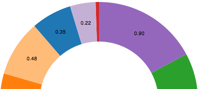

Chapter 13 Layouts Homework: What Layouts Have in Common!
Some examples of layouts include chord, cluster, force, pack, partition, pie (yummy), stack, tree, and treemap. Three of the most common are pie, stack, and force. Each has a set of different fuctions and syntax.

A Pie layout allows for the angles to be calculated for you so you won't have to consider the redians. The pie layout is simple and easy to represent data.
A stack layout allows data sections to be stacked on top of eachother in a visual representation. It does this by calculating a baseline value. They are versitile, and can be represented as bar charts, area charts, and streamgraphs.These are a little more complicated than pie charts as an understanding of the baseline and topline data is needed. Stacked Areas are similar to stacked layout graphs except it allows for a visual that can stray away from simple bars to represent different kinds of data and more complicated data. It can represent time series data. For example, this allows for the visualization of growth or decline in sales for a company. This allows for the graph to show both totals and relative contributions at the same time -- however, this can be visually tricky for users to understand.
The final common graph type is force layout. They are typically used with network data. This is a commonly used graph and often over used but sitll effective for some data sets. It is also a movable data set where nodes can be dragged and rearranged giving a neat effect.
These data representaiton have some general things in common. They all allow for a presentage or a fixed amount of data to be represented when compared to another fixed set of data. For the pie chart, each data group has a percentage of 100 when compared with the other data sets within the same pie layout. The force layout shows data in relation to one another depending on distance appart and "force" between represented data points. The stack layouts calculate values for the baseline and topline depending on the specific data being represented. The data isn't being represented in an independed way that maybe a bar graph or histogram would represent data. It gives relative information based on the other information provided.
Pictures retrieved from:
Pie Layout picture: https://d3-wiki.readthedocs.io/zh_CN/master/Pie-Layout/
Stack Layout Pictures: https://www.exceldashboardtemplates.com/how-to-setup-your-excel-data-for-a-stacked-column-chart-with-a-secondary-axis/
and
https://www.fusioncharts.com/area-charts
Force Layout Picture: http://www.d3noob.org/2013/03/what-is-force-layout-diagram-in-d3js.html